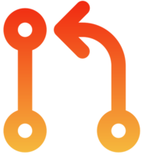

Tab Icon Switcher Options
Choose which tab icons you want to enable
Show bug icon for tabs starting with "Bug"

Show PR icon for tabs starting with "Pull request"
Show story icon for tabs starting with "User Story"
Show pipeline icon for tabs starting with "Pipeline"
Show feature icon for tabs starting with "Feature"
Show epic icon for tabs starting with "Epic"
Show readiness icon for tabs starting with "Release Readiness"
Show search icon for tabs ending with "- Search"
Show board icon for tabs ending with "- Boards"
Show wiki icon for wiki pages (URLs containing "_wiki/wikis")
Show code icon for tabs ending with "- Repos"
Show release icon for release pages (URLs containing "/_release")
Show dashboard icon for dashboard pages (URLs containing "/_dashboards")
Show artifacts icon for artifact pages (URLs containing "/_artifacts")
Show query icon for query pages (URLs containing "/_queries")
Show settings icon for settings pages (URLs containing "/_settings")